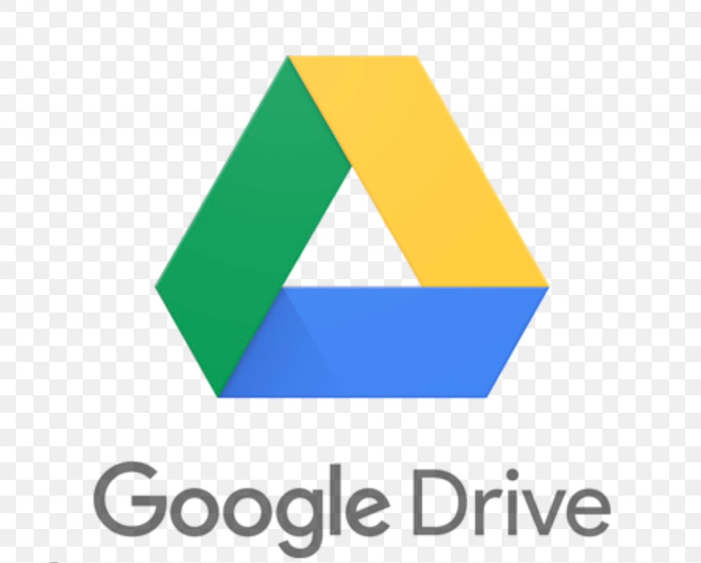

اسم الطالبة: كنوز عطية ابراهيم
الرقم الجامعي: 2501147
أصبحت الملفات الرقمية جزءًا أساسيًا من الدراسة والعمل؛ إذ يحتاج المستخدم إلى حفظ المستندات والصور والعروض والوصول إليها من أكثر من جهاز، كما يحتاج أحيانًا إلى مشاركتها مع زملائه أو معلميه. وقد يؤدي الاعتماد على وحدة تخزين محلية أو إرسال نسخ متعددة عبر البريد الإلكتروني إلى صعوبة تنظيم الملفات أو فقدان أحدث نسخة منها.
جوجل درايف هي خدمة تخزين سحابي، ومثل جميع الخدمات السحابية، فإن وظيفتها الأساسية هي إزالة بعض الأحمال من محرك الأقراص الثابتة. يعمل التخزين السحابي عن طريق تحميل ملفاتك إلى خوادمه البعيدة أو "السحابة"، مما يؤدي إلى إخلاء مساحة على جهاز الكمبيوتر الخاص بك.

يعتمد التخزين السحابي على توفير مساحة لحفظ الملفات الرقمية عبر الإنترنت، مع إمكانية الوصول إليها في أي وقت ومن أجهزة مختلفة. ويحتاج المستخدم إلى اتصال بالإنترنت وإلى حساب يتيح له استخدام الخدمة.
تعتمد الخدمات السحابية على مراكز بيانات تحتوي على خوادم تعمل على تخزين البيانات وإدارتها. ويساعد التخزين الموزع على توزيع البيانات عبر أنظمة متعددة بهدف تحسين الأداء والموثوقية.
تتيح مزامنة الملفات تحديث البيانات بين الأجهزة المختلفة. فعند إجراء تعديل على ملف، يمكن أن تظهر التعديلات على الأجهزة الأخرى المرتبطة بالحساب. ويساعد ذلك على الوصول إلى أحدث نسخة من الملفات.
يتيح Google Drive مشاركة الملفات والمجلدات مع الآخرين. ويمكن تحديد صلاحيات المستخدمين مثل المشاهدة أو التعليق أو التعديل، مما يساعد على تنظيم عملية التعاون والتحكم في الوصول إلى البيانات.
يمثل أمن المعلومات عنصرًا أساسيًا في خدمات التخزين السحابي. وتستخدم الخدمات السحابية وسائل أمنية مثل التشفير وإدارة صلاحيات الوصول للمساعدة في حماية البيانات من الوصول غير المصرح به.
| وجه المقارنة | التخزين المحلي | التخزين السحابي |
|---|---|---|
| مكان حفظ الملفات | على جهاز المستخدم | على خوادم عبر الإنترنت |
| الوصول إلى الملفات | من الجهاز الذي يحتوي على الملفات | من أجهزة مختلفة عبر الإنترنت |
| مشاركة الملفات | تحتاج غالبًا إلى نقل الملفات | يمكن مشاركتها باستخدام الروابط |
| المزامنة | محدودة بين الأجهزة | تتيح تحديث الملفات بين الأجهزة |
| المساحة | تعتمد على مساحة الجهاز | تعتمد على مساحة الخدمة السحابية |
يمثل Google Drive نموذجاً متطوراً لتطبيقات الحوسبة السحابية الحديثة؛ فهو لا يقتصر على كونها مساحة تخزين افتراضية بسيطة، بل هو نظام بيئي متكامل يعتمد على التخزين الموزع، وتكرار البيانات لضمان الموثوقية، وخوارزميات ذكية للمزامنة والبحث، بالإضافة إلى بنية أمنية صارمة تضمن سرية البيانات وسهولة مشاركتها والتعاون فيها بكفاءة عالية عبر مختلف منصات التشغيل العالمية.